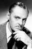

Country:United States, 72 minutes
Spoken languages:
Genres:Horror, Mystery, Thriller
Director(s):Terry O. Morse
Writer(s):Pierre Gendron
Video Codec:Unknown
Number: 1752


Certification:
Storyline:
Leo, a former convict, is living in seclusion on an island with his step-daughter, the daughter of his late wife. Leo was framed by a group of former business associates, and he also suspects that one of them killed his wife. He has invited the group to his island, tempting them by hinting about a hidden fortune, and he has installed a number of traps and secret passages in his home. He is aided in his efforts by a former cell-mate who holds a grudge against the same persons. When everyone arrives, the atmosphere of mutual suspicion and the thick fog that covers the island promise a tense and hazardous weekend for everyone.
Cast: 


Medium: Original DVD,
Comments: Part of: Mystery Classics - 50 Movie Pack
Loaned: No
Aspect ratio: Unknown